1–7 dic
Reel 1: el primer antojo, textura y servido de un helado.
Diseño 1: sabores disponibles, con ubicación y horario confirmado.

Una marca que creamos juntos
Silvia, nos da mucho gusto retomar Sweet Ice. En TMB Magic Box creamos su marca y nos entusiasma imaginar su siguiente etapa: llevar esa identidad a contenido que abra el antojo y facilite decidir una visita.
La mezcla de helados y bebidas frías y calientes abre una ruta muy buena para diciembre. Proponemos una serie con producto protagonista, composiciones limpias y un cierre útil: qué probar, dónde encontrarlo y cómo consultar disponibilidad. Sin cambiar la marca que construimos, le damos continuidad.
Calendario sugerido · 1–28 de diciembre de 2026. Fechas sujetas a contratación, sesión y aprobación de piezas.
Diseño 1: sabores disponibles, con ubicación y horario confirmado.
Diseño 2: encuesta de sabores.
Diseño 3: plan navideño y horarios especiales confirmados.
Diseño 4: saludo de Navidad e invitación a visitar Sweet Ice.
Continuación opcional: Día de Reyes, 6 de enero de 2027. Se trabaja en el siguiente periodo; no suma piezas a este mes. Buen Fin solo se consideraría con material existente y aprobación a tiempo, sin prometer entregas urgentes.
4 reels + 4 diseños · 1 jornada de grabación · calendario mensual · copys sugeridos · reporte simple · 2 rondas de cambios por pieza.
Precio especial por retomar la marca. Producción en Chetumal: traslados y viáticos por cotizar antes de cerrar.
Precios + IVA si se requiere factura, conforme al tarifario vigente. Anticipo 50%; resto contra entrega. Alcance y logística por escrito antes de reservar.Contenido mensual para redes: estrategia editorial y producción. Publicación, respuestas a mensajes, gestión de comunidad, administración de anuncios e inversión publicitaria NO están incluidas en este paquete; se cotizan por separado si las necesitan.
Tomamos una referencia inicial y revisamos reproducciones, guardados, visitas al perfil y consultas con intención. Registramos qué pieza originó cada consulta cuando sea identificable; no prometemos ventas, reservas ni crecimiento garantizado.
 Kogure · Ronqueo de atún
Kogure · Ronqueo de atúnUna referencia de cómo hacemos protagonista al producto, no una promesa de resultados.
Partimos de la identidad que creamos para ustedes. Primero confirmamos objetivos, materiales vigentes y oferta; después ajustamos el plan y acordamos una sola sesión. Cada pieza se revisa antes de publicarse.